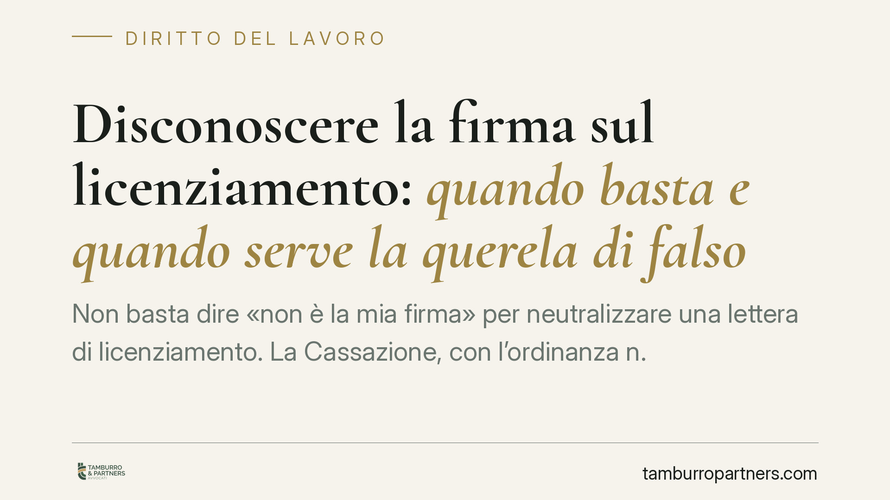

Disconoscere la firma sul licenziamento: quando basta e quando serve la querela di falso
Non basta dire «non è la mia firma» per neutralizzare una lettera di licenziamento. La Cassazione, con l'ordinanza n. 17089/2026, distingue due scenari processuali molto diversi: il mero disconoscimento della sottoscrizione e la contestazione del contenuto di un documento firmato. Dalla scelta dello strumento dipende su chi grava l'onere della prova e, spesso, l'esito della causa.

Il caso
Un lavoratore impugna il proprio licenziamento contestando la lettera prodotta dall'azienda. Dopo le decisioni del Tribunale e della Corte d'Appello di Salerno, la questione arriva in Cassazione, che con l'ordinanza n. 17089/2026 fissa un principio tecnico ma decisivo: non ogni contestazione di un documento segue le stesse regole.
La differenza non è formale. Riguarda il tipo di atto da compiere in giudizio e, soprattutto, chi deve dimostrare cosa.
Inquadramento normativo
Il nostro ordinamento tratta in modo diverso due situazioni che a prima vista sembrano simili.
La prima è il disconoscimento della scrittura privata, disciplinato dagli artt. 214 e seguenti del codice di procedura civile. Quando una parte dichiara di non riconoscere come propria la firma apposta su un documento, chi lo ha prodotto in giudizio – qui l'azienda – deve attivare la procedura di verificazione (art. 216 c.p.c.) per dimostrarne l'autenticità, tipicamente tramite consulenza grafologica. In sintesi: l'onere della prova sulla genuinità della firma ricade su chi vuole far valere il documento.
La seconda situazione è radicalmente diversa. Se il lavoratore ammette di aver firmato ma sostiene che il contenuto della lettera è stato alterato, aggiunto o comunque non corrisponde a quanto sottoscritto, non siamo più nel campo del disconoscimento. Qui occorre la querela di falso (artt. 221 e seguenti c.p.c.): uno strumento processuale più gravoso, con cui si contesta che il documento, pur autentico nella firma, è falso nel contenuto. L'onere, in questo caso, grava sulla parte che propone la querela.
Perché la distinzione conta
Il punto pratico è questo: ammettere la firma e poi dire «ma quel testo non è quello che ho firmato» non è un disconoscimento. È un'affermazione di falsità del documento, che richiede la querela di falso.
Chi sbaglia strumento rischia molto. Se il lavoratore si limita a un generico disconoscimento mentre, nei fatti, riconosce la propria firma, il giudice può ritenere il documento pienamente utilizzabile. La contestazione, pur sostanzialmente fondata, viene processualmente dispersa perché veicolata nel modo errato.
La Cassazione, con l'ordinanza n. 17089/2026, ribadisce quindi un confine netto:
- firma contestata come non propria → verificazione, onere a carico di chi produce il documento;
- firma ammessa ma contenuto contestato → querela di falso, onere a carico di chi contesta.
Implicazioni pratiche per il lavoratore
Per chi riceve una lettera di licenziamento che ritiene irregolare, la lezione è duplice.
Prima occorre stabilire con precisione cosa si sta contestando. Non si firma affatto quel documento? Oppure la firma c'è, ma il testo sopra è diverso da quello sottoscritto, magari perché completato o modificato dopo?
Dalla risposta dipende la strategia processuale. Confondere i due piani significa scegliere lo strumento sbagliato e indebolire la propria posizione, anche quando le ragioni di merito sarebbero solide.
Attenzione anche alla tempistica: l'impugnazione del licenziamento resta soggetta ai termini di decadenza previsti dalla legge. Le valutazioni sulla firma e sul contenuto vanno fatte rapidamente, per non arrivare tardi alla fase giudiziale.
Cosa fare in concreto
- Conserva l'originale della lettera e ogni documento collegato (buste paga, comunicazioni, messaggi), senza apporre annotazioni o modifiche.
- Chiarisci subito la natura della contestazione: distingui tra «non ho firmato» e «ho firmato ma il contenuto è alterato». Sono due difese diverse.
- Verifica i termini di impugnazione del licenziamento prima di qualsiasi altra valutazione, per evitare decadenze.
- Rivolgiti tempestivamente a un legale, così da scegliere tra disconoscimento e querela di falso prima di depositare atti.
- Raccogli elementi utili a sostenere la verificazione o la querela (testimoni, precedenti versioni del documento, scambi email).
La correttezza dell'impostazione processuale, in questa materia, pesa quanto la fondatezza nel merito.
---
Contributo informativo a cura di Tamburro & Partners – Avv. Giuseppe Tamburro. Non costituisce parere legale.
Ogni storia di lavoro ha i suoi tempi.
Se gestisci HR e vuoi un confronto su contenzioso, ispezioni o licenziamenti, scrivi allo studio. Ti rispondiamo entro un giorno lavorativo.